|
Building an On2 Model Railroad.
Step 1 - Designing the trackplan
My wife and I bought a house
in July 2006! 
It has room in the yard
for a Garden Railroad, plus a bonus..
a "finished room" in the
basement perfect for a small On2 model railroad!
On2 scale is O scale, 1/48
scale, modeling 2-foot gauge prototypes,
yes, real trains with a
mere 24 inches between the rails!
I will be modeling the "Maine
2-footers", 2-foot gauge railroads that operated in Maine from 1879 - 1940.
I also want to model a bit
of Standard Gauge as well, with some Standard Gauge trains and track.
There were a few places
where the S.G and 2-footers interchanged and crossed.
Wiscasset Maine (on the
WW&F) had a dual-gauge crossing, and several dual gauge crossings existed
in Farmington, Maine,
on the SR&RL. (in both
cases, the Standard Gauge railroad was the Maine Central)
I want to incorporate at
least one dual-gauge crossing, and a SG/NG interchange, on my railroad.
First off, the empty basement
room:
(photo of empty room here.)
The room is 22.5' long by
12.5' wide.
Although because of the
stairs, doors and a closet, the actual "usable space" for the model
railroad is approx 14' long
X 12' wide.
If I was modeling in N-scale,
this would be a HUGE railroad!
Even in HO, its a respectible
space.
But I quickly found that
in O-scale, its not much! 
But thats ok, it should
be plenty for what I want to build.
First off, there are a few
specific scenes/areas I would like to model,
and a few specific structures:
(1.) The Wiscasset, Waterville
& Farmingtion Railroad's 3-door "Yellow shop" building,
The main WW&F shop building, was located in the Wiscasset upper yard:
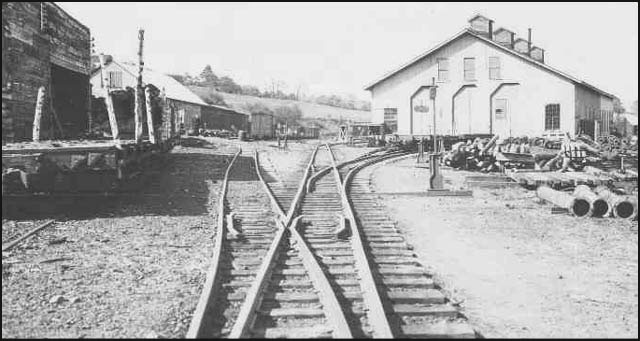
(2.) some sort of model
of the WW&F's Wiscasset Harbor/Waterfront area.
Including the Wiscasset dual-gauge diamond crossing, where the 2-foot gauge
WW&F crossed over the standard gauge Maine Central:
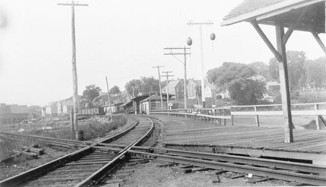
Modeling this dual-gauge
crossing will also allow a section of standard gauge track on the layout,
which I think will be very
interesting for comparision to the 2-footers!
I wont have *operating*
standard gauge however..no room for that..but I will create a standard
gauge "display train" to
sit on the the SG rail in Wiscasset. I will probably hand-lay the track
to Proto-48 gauge.
I will also try to fit in
the WW&F passenger station at this location.
(3.) The Sandy River
& Rangeley Lake's Phillips yard area, including the turntable, roundhouse,
and whatever else from the yard area that will fit.
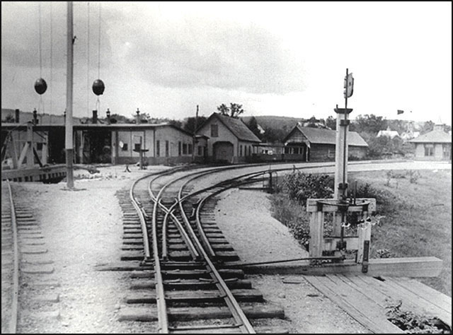
I haven't decieded yet on
a "early or late" era for the turntable & roundhouse,
but im definately going
to model "early" for the Phillips depot, just because
I like the look of the original,
shorter depot!
(im not going to be too
concerned with *absolute* prototype accuracy..as long as
it "looks like" the area
im modeling, thats good enough for me.)
(4.) The Phillips Depot.
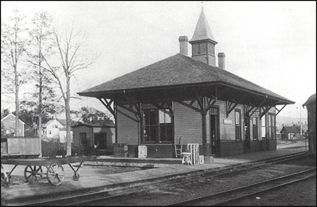
(5.) The SR&RL Salmon
Hole bridge,
just because its my favorite 2-footer bridge!
And thats it..
Five distinct "vignettes"
or seperate "areas of interest" in my railroad.
Wiscasset shop area.
Wiscasset dual-gauge crossing
and Wiscasset WW&F station.
Phillips roundhouse.
Phillips depot.
Salmon Hole bridge.
Now..how to fit them into
the space??
I drew up the space, with
a scale of 1" = 1', and got to work.
Here is a blank drawing of
the room:
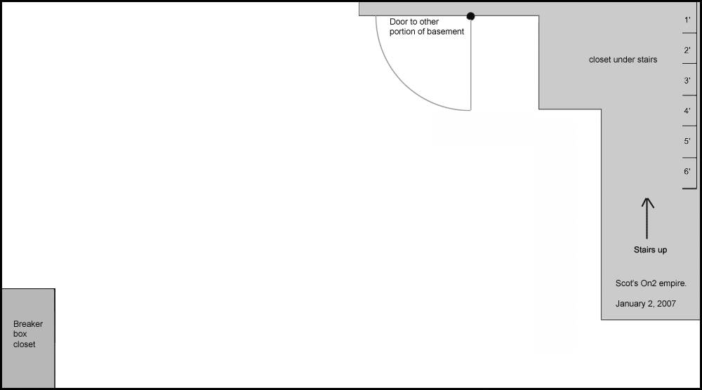
I drew up four early tracklans,
and used to have them posted on this page, but I removed them,
because there isnt much
to see..they are no good, and I quickly left them behind.
So I will start this page
with trackplan #5.
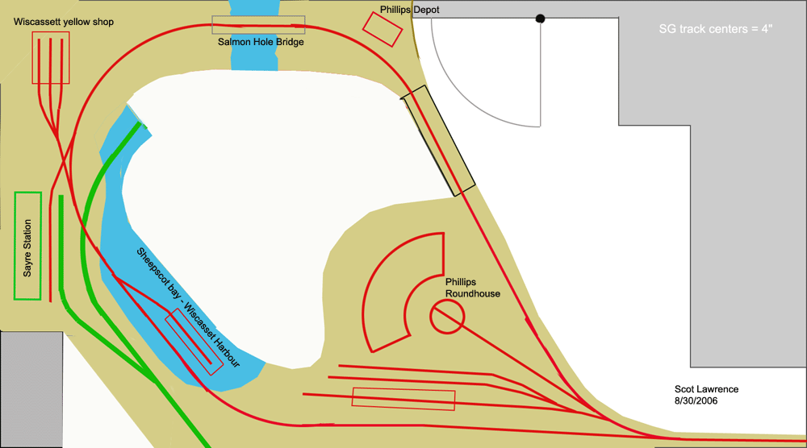
The red tracks are 2-foot
gauge, the green tracks are standard gauge.
Nice! much better! (better
than trackplans 1-4)
The Phillips roundhouse
area becomes the largest area of the layout..very cool.
Can make a quite large roundhouse.
Room for some Phillips yard
tracks as well..they are on the "wrong side" of the roundhouse,
but thats ok..
the Phillips depot is on
the other side of the access bridge, but thats fine too..its still in the
correct
"prototype position" in
relation to the roundhouse.
The Salmon hole bridge is
a seperate area..on the wrong side of Phillips, but I can live with that.
then the Wiscasset area
conatains the waterfront and the yellow shop, in correct orientation to
each other.
Plus the S.G. tracks, in
more-or-less correct orientation to the WW&F tracks.
then, my Sayre station fits
in, and becomes the station for both the S.G and N.G.!
Sort-of has a "Farmington
feel" about it..might have to see if I can fit another dual-gauge crossing
in there.
a morph of the Wiscasset
and Farmington dual-gauge crossings perhaps.
hey wait..those Phillips
yard tracks..I can easily put them on the *correct* side of the roundhouse!
(I drew in the Roundhouse
first..then just stuck in the yard tracks in the open area that remained!)
Trackplan 5a:
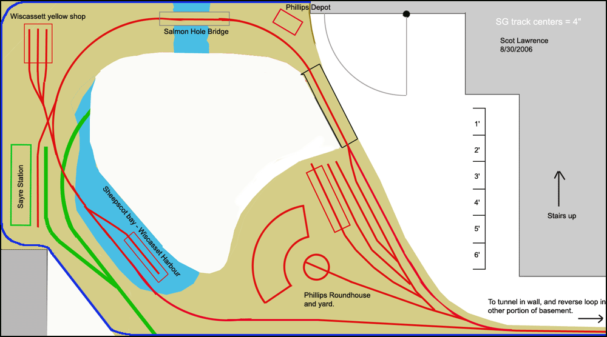
not bad!
the only thing I dont like
is the way the Maine Central leaves Wiscasset and just falls off the edge
of the Earth.
but I dont see much a solution
to that right now.
and the Phillips turntable
is on the extreme edge of "reachability"..3 feet from either edge.
hmmmm..but its probably
workable.
and thats everything I have
after 2 days of planning!
Im sure this will be revised
and changed a billion more times.
Im not even planning to
start construction for a few years!
Have many On2 models to
build first..
Ideas / thoughts / comments
/ better ideas / "that wont work" / questions / anything, are all welcome!
Im especially interested
in any "that wont work" comments people might have..
I dont have the exact dimensions
of my structures worked out yet,
and I dont have much of
a "feel" for On2, spatially, yet..since I have never
worked in this scale before.
the turntable is 1' long
on the drawing (scales to a 48' long turntable)
The roundhouse bays are
about 50' long.
the Salmon hole Bridge is
150' long (which is prototype length) 3 feet on the drawing.
The footprint of the Sayre
station is 1X3 feet! I dont have exact prototype dimensions yet,
but that is close. (I have
a drawing somewhere..need to dig it out.)
Trackplan 5b, further
refinement:
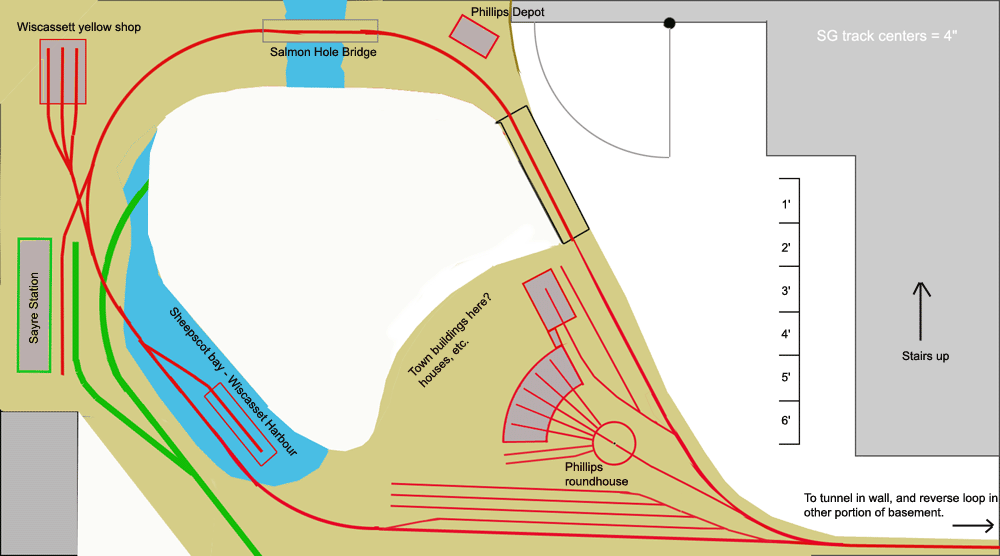
Its ok, but not great..I
like the Phillips roundhouse area, but Wiscasset is still a mess.
On these plans I also have
"Sayre Station" shown...originally I wanted to try to fit in an O-scale
model of the
Lehigh Valley Sayre, PA
passenger station!
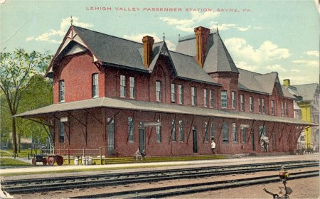
only because Waverly/Sayre
is my hometown, and I love the building..
I was a member of the railroad
museum in the station when I was a teenager back in the 80's.
but its too big, and its
hundreds of miles from Maine! ;)
so I quickly dropped that
idea! ;) it was just wishfull thinking.
Update, January 2, 2007
Yet more evolution of the
plan..
A whole new design came
to me as I was driving back from Ohio over Christmas week.
Trackplan #9:
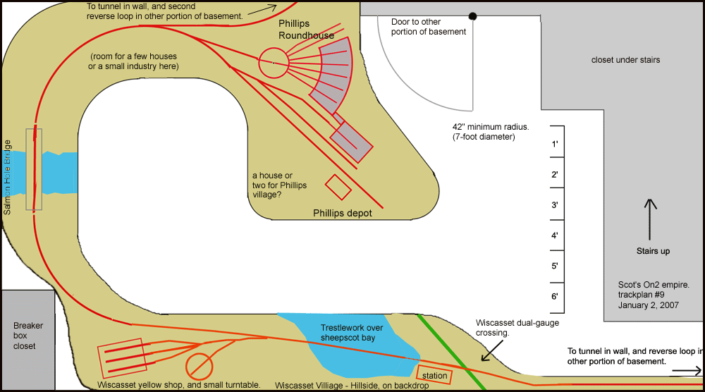
I think I like this better!
It still has the main "areas
of interest" I want, namely:
Wiscasset upper yard
Wiscasset dual-gauge crossing
Salmon hole bridge
Phillips roundhouse and
depot area.
One thing I dropped completely
is the Sayre station and its necessary standard gauge track.
It just doesnt fit..it doesnt
fit because its just too big,
and it also doesnt fit because
Sayre, PA is a long way from Maine! ;)
I will just have to build
the Sayre station in 1/29 scale and put it on the Garden railroad!
so with this plan, the only
bit of Standard Gauge trackage is at the Wiscasset dual-gauge crossing.
I would still like a little
bit more, a least enough track to stage a standard gauge train,
and I also dont like track
just ending at the backdrop and at the end of the layout, but thats
the best I can come up with
for now.
A drawback to this plan is
that the original plans only required one reverse loop in the other part
of the basement..this one
requires two! thats a potential problem.
(I have never been a big
fan of "operation-only" layouts..I dont mind *some* operation,
but I also like to let the
trains run! so I definately want continuous operation.)
So..TWO reverse loops? I
dont know...thats iffy.
they take up a lot of room,
they have to be 7 or 8 feet across.
I have been planning all
along to have anything in the "unfinished" portion of the basement be moveable,
to get it out of the way
when the layout is not in use...maybe fold-up against a wall,
or lift-up to the ceiling..My
wife and I need access to that portion of the basement for storage.
(I have free-reign in the
"layout room" itself, but Deb would need to give her approval for any
construction of benchwork
in the other portions of the basement! ;)
which is fine..because I
also would want anything in the unfinished portions of the basement to
"get out of the way"
when not in use..
so, a quick rendering of
the reverse loops: (this drawing shows 7-foot diameter reverse loops)
eep..thats really no good.
the loops are too big, too
cumbersome, and the curves necessary to mate them up with the rest of the
layout
look like they would require
curves much tighter than 7-foot diameter. im not liking it...its not feasable.
how about this instead?
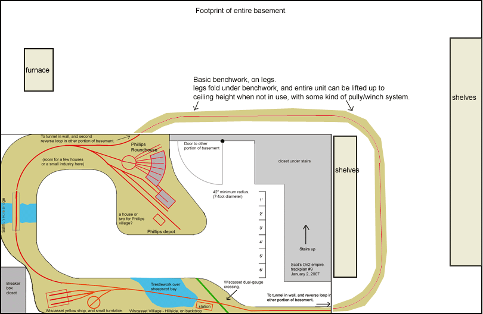
hmmmm..might work!
But I like the operating
characteristics of the "two reverse loops" plan better..
because with that plan,
a train leaves Phillips, loops around, and comes BACK to Phillips!
Which is very prototypical..because
on the real SR&RL, a train would head north out of Phillips, run up
to the "end of the line"
at Rangeley, turn around and come back to Phillips..
the prototype SR&RL,
like nearly all railroads, was "point to point"..
And the same thing would
happen at the other end of the layout, a train leaves Wiscasset upper yard,
heads over to the Wiscasset
"lower yard", (which is not modeled..the "loop" would be the wiscasset
lower yard)
then the train comes back
to Wiscasset!
(yes, going in the opposite
direction, which isnt prototypical, but thats ok.)
With the "one big oval" trackplan,
a train leave Phillips, and re-appears way down in Wiscasset!
hmmm..not as good...it throws
the universe out of joint.
and, I plan to use DCC..if
two operators are operating two trains with the "two reverse loops" plan,
the trains would keep coming
at each other from opposite directions, forcing them to pass
each other at a passing
siding..very prototypical and interesting.
but with the "one big oval"
plan, the two trains are just following each other in the same direction.
I want to use WIDE curves..as
wide as possible.
(I started with 8-foot diameter,
and am now down to 7-foot, which is still pretty good for On2)
but what if the models themselves
are physically capable of tighter curves, even if I dont want
those tight curves on the
layout? the reverse loops could in theory be 4-foot diameter without
too much trouble! and I
would still keep a 7-foot diameter minimum on the "visable" layout:
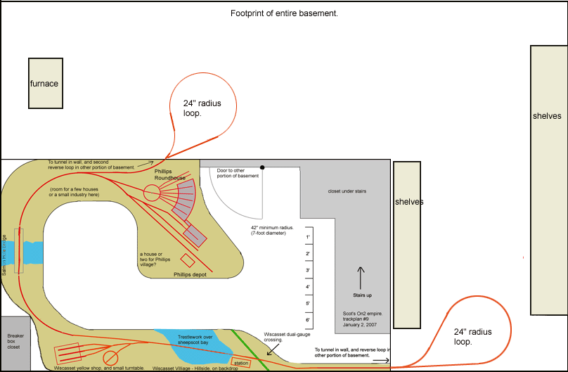
hmmm!
This plan also gave the inspiration
to solve the "breaker box problem"
The one major problem with
the layout of the layout room is the "breaker box closet"..
its in the lower left corner
of the plan.
Its just a small closet,
2X3 feet, that contains nothing but the breaker box for the house.
Clearly that was the original
location of the box, and when previous owners created the "finished room"
that will contain my railroad,
they just encased the breaker box in the small closet, rather than move
it.
I wont bother to move it
either..
but I must keep access to
that closet!
but man..is it ever in an
unfortunate place when it comes to designing a trackplan.
how about this?
the layout room is carpeted..they
have these "furnature slider" things now, disks that you can
put under heavy furniture
to make them easy to slide..
put the layout-legs on these
sliders, make that chunk of layout removable, and just slide it
out of the way when necessary.
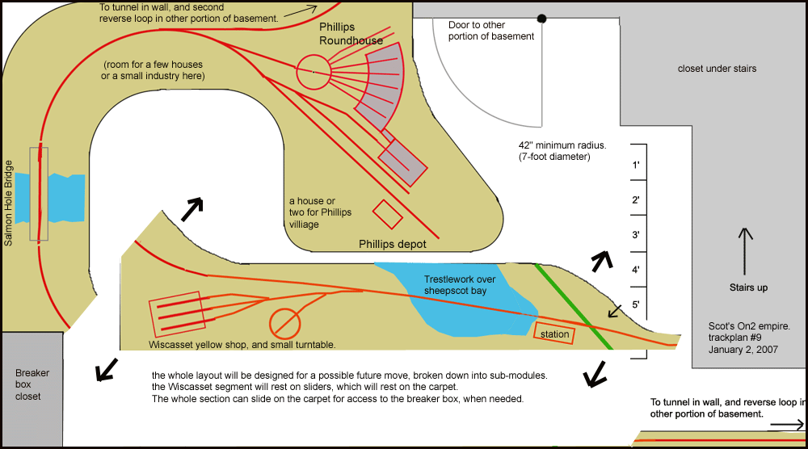
could work..maybe..
Thats it for trackplan #9!
:)
Update, January 4, 2007
trackplan #9a!
a refinement of trackplan
9.
I really like this one!
I think its working out
nicely.
One cool thing that sort-of
happened by chance is the trestle leading off of the Salmon Hole bridge
heading
into Phillips..
When the real Sandy River
Railroad first built into Phillips, the big curve approaching the Phillips
shop area
from the south was originally
a low, long trestle, which was later totally filled in. (Today a road sits
on top of this fill.)
Well I always liked the
looks of the trestle, and I thought if I ever modeled Phillips I would
like to model
that feature...Well on this
trackplan, the trestle coming off the Salmon Hole bridge is not only the
trestle
for the Salmon Hole Bridge,
but it also doubles as the trestle approaching Phillips!
Two different prototype
trestles combined into one model trestle..I like it!
And I also like how nearly
everything is in the proper prototype alignment.
Wiscasset is south of Phillips,
(and would have been connected if the FS&K had been completed)
Salmoh Hole bridge is south
of Phillips.
Phillips yard area is mostly
laid out correctly.
Wiscasset dual-gauge crossing
is in proper orientation to the Wiscasset upper yard..
I even moved the Wiscasset
shop so it would be on the correct side of the mainline,
which also now places the
Wiscasset shop and the little Wiscasset turntable up at the edge
of the benchwork, rather
than up against the backdrop as they were before.
now the only structure in
the "wrong" position is the wiscasset turntable..I can live with it!
So here is the latest and
greatest plan as of January 4, 2007:
Trackplan 9a.
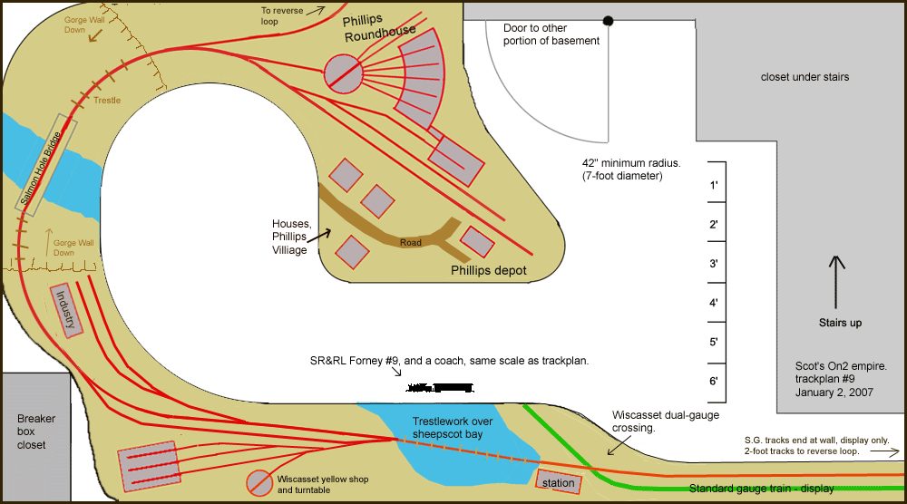
(18 months go quickly by...)
Update, September 2008
Its been a year and a half
since the planning above..
every time I go down to
the basement, I stand around for a few minutes thinking about the future
railroad!
A few things have been continuously
bothering me about trackplan 9a above..
First, Wiscasset is just
all-wrong. The track and structure layout was the best I could do to fit
things
into the space, but it really
bothers me that the turntable has to be on the wrong side of the mainline..
plus, there is no room for
the Wiscasset 3-stall roundhouse! thats no fun..
Second..the infamous "breaker
box problem" has to be solved..
thats really a major problem..
my only idea so far, the
idea of "sliding" a big section of layout out of the way to access the
closet,
is just no good..this will
not do.. too cumbersome, too impractical.
So I finally sat down and
worked up a modified plan:
Trackplan 10.
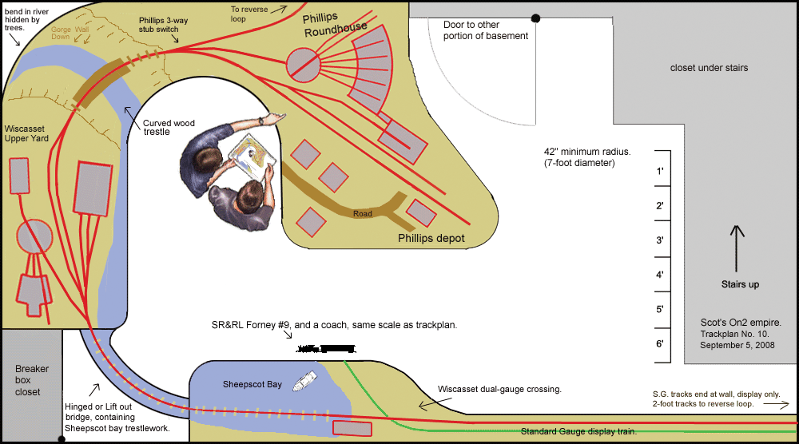
Not bad!
I cut all the individual
scenes apart (with photoshop) and moved them around to see how they fit.
With this plan, Wiscasset
is correct! (well mostly..im not going for absolute accuracy, but the buildings
and
track are at least in the
proper orientation to each other.)
and! I think I finally solved
the "breaker box problem!"
There is now a removeable
bridge..either hinged so it swings down, or perhaps I will make it a "lift
out"
with just a plug for powering
the bridge rail..either method would be fairly easy.
Now, the bridge can stay
"down" (or "out") whenever the railroad is not in use..
and it will take mere seconds
to put the bridge in place for operating sessions.
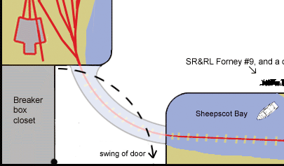
And I like the WW&F Sheepscot
bay trestlework on the bridge itself!
The bridge is part of the
scenery, and continues the scene from the dual-gauge crossing and station
area
over to the "upper yard".
I found a small piece of
a MR trackplan on-line that someone had scanned, containing the
"guys as seen from above"!
so I pasted them in..gives a nice sense of scale!
My only regret about this
trackplan is that I had to take out the Salmon Hole Bridge. 
It just doesn't fit.
There is no room on the
plan for 3-foot long straight bridge..
I even tried cutting it
down to 2-feet, thinking I could "selectively compress" the bridge..
still no good.
To quote Doctor House quoting
the philophoser Jagger, "You can't always get what you want."
So instead im going to put
a smaller curved wood trestle in its place, there was a real curved trestle
on the
Sandy River RR. And I still
get to keep the trestlework heading into the Phillips yard, which I really
like,
(and its prototypical)..
and the trestle/river area makes a "dividing scene" between Wiscasset and
Phillips,
which is very necessary..I
wouldnt want them blending together!
That wouldnt look right..
The river under the curved
trestle will be rocky/bouldery, like the Sandy River,
while down in Wiscasset
it will be more bay-like, deep water.
And thats all for now!
until the next alteration
of the plan!
although I have a feeling
I might not be doing much more altering..I think I will keep this one!
no idea when actual construction
might begin..
im already booked solid
for winter model projects this year..
I might start on a structure
though!
Perhaps the Wiscasset yellow
shop..
Page
started August 30, 2006.
Email
- sscotsman@yahoo.com
Return
to my On2 projects page
Return
to my main page
|